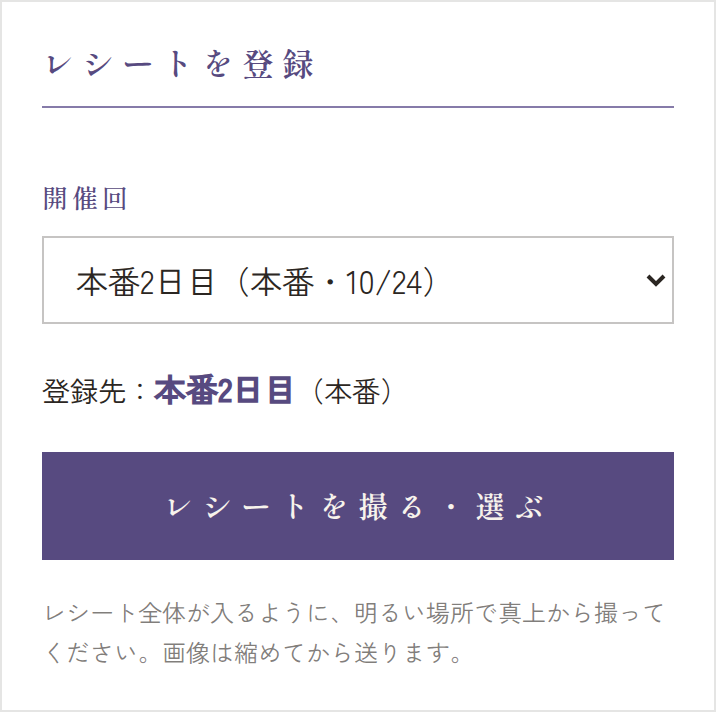
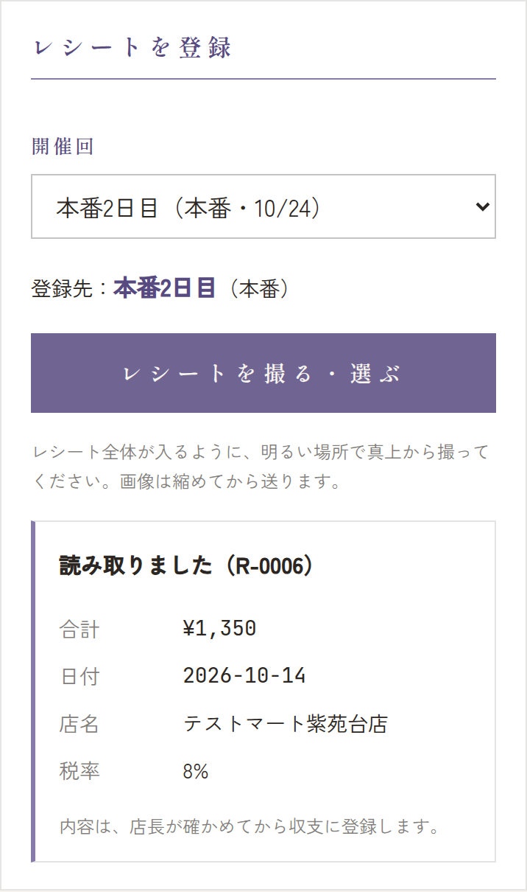
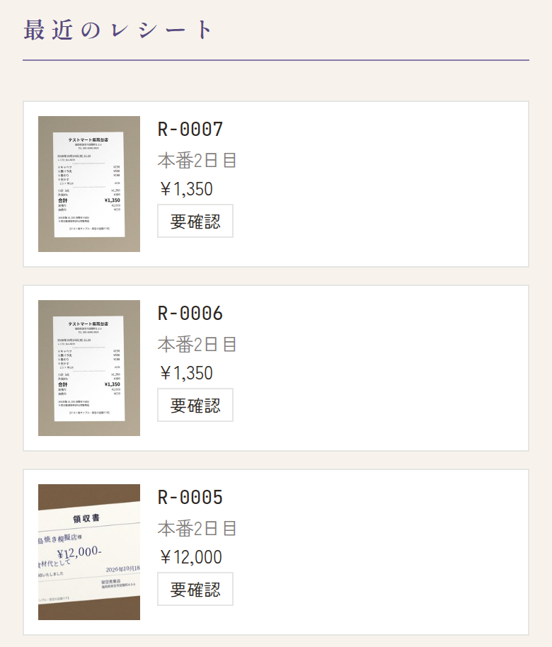
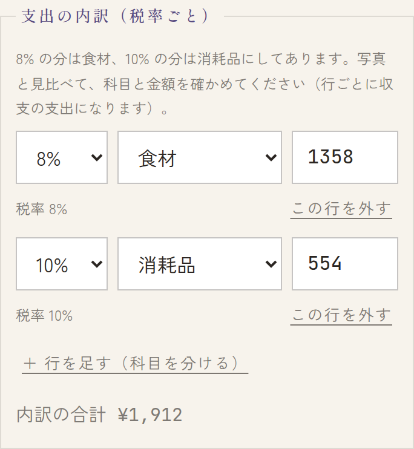
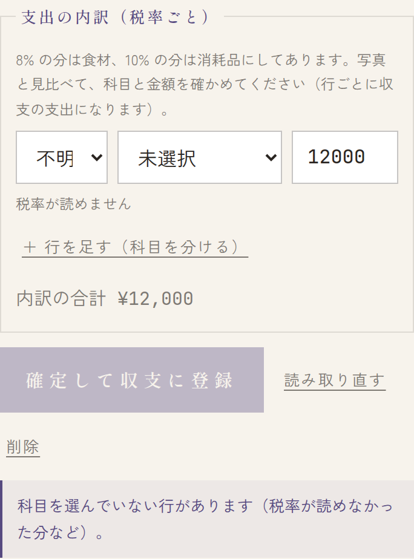
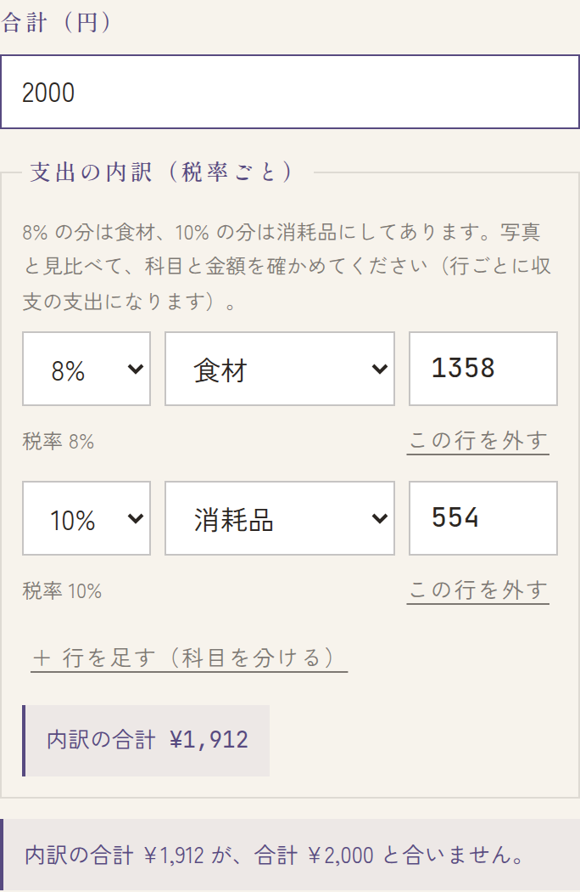
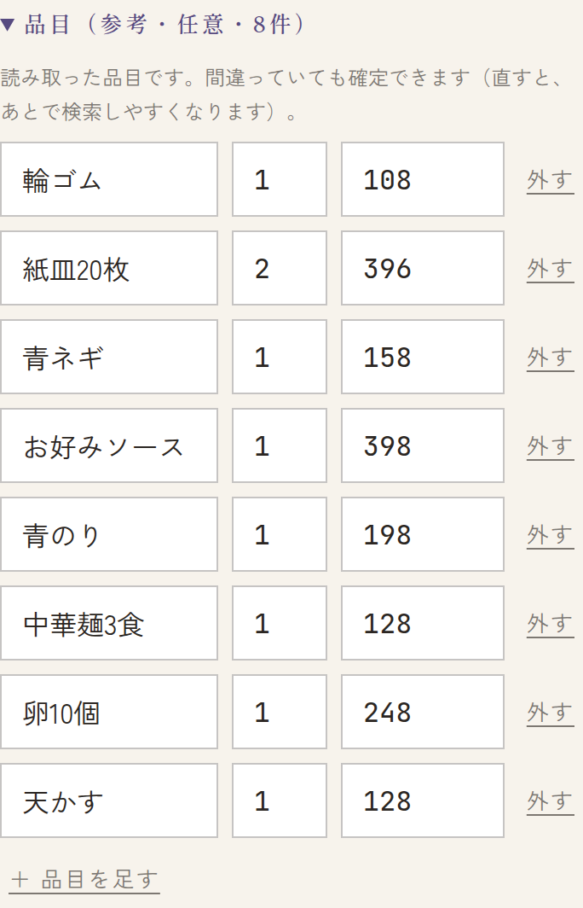
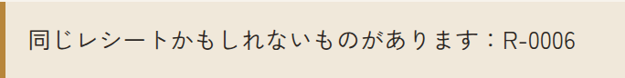
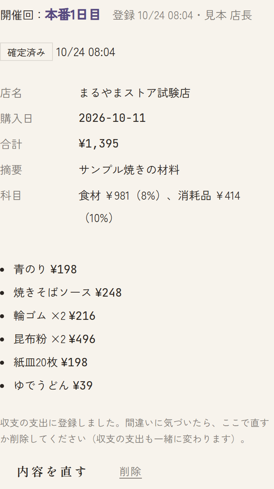
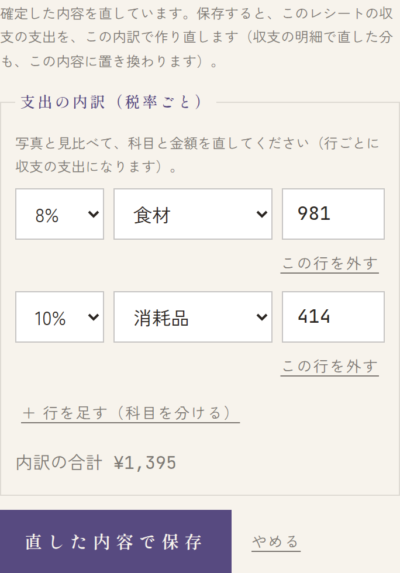

材料などを買ったときのレシートは、スタッフが写真で送り、店長が確かめて確定します。確定すると収支の支出に入り、学校に出す書類にも入ります。
スタッフ: レシートを送る注文帳・レジの画面の「レシート」から送ります。
送り方
- 注文帳・レジにログインして、右上の レシート を押します（ログインのしかたは → 開店前）。
- 開催回を選びます。ふつうは最初に選ばれている日のままでかまいません。下に「登録先：本番2日目（本番）」のように出ます。
- レシートを撮る・選ぶ を押すと、スマホではカメラが開くので撮ります（パソコンでは、写真のファイルを選びます）。
- 「読み取り中…（15秒ほどかかります）」と出たら、そのまま待ちます。
- 「読み取りました（R-0006）」と出て、合計・日付・店名・税率が出れば完了です。レシート番号（R-…）を、レシートの原本にメモしておくと、あとで探しやすくなります。




- 開催回の選び方: 本番で使う材料なら、本番のどの日を選んでも合計されます。練習の開催回を選ぶと、学校に出す収支報告に入りません。練習のためだけに買ったもの以外は、本番の日を選んでください。
- 急ぐとき: あとで確認する を押すと、待たずに次へ進めます。読み取りは続いていて、終わると下の「最近のレシート」に結果が出ます。
- 内容を確かめて収支に入れるのは店長です。スタッフは送るだけです。


上手な撮り方
- レシート全体を1枚に: 店名・日付・品目・合計・「8%対象」「10%対象」の行まで、全部が入るように撮ります。1枚のレシートは1枚の写真で送ります（分けて送ると、2枚のレシートになってしまいます）。
- 真上から: 斜めから撮ると文字がゆがんで読めません。机に置いて、スマホをレシートと平行にします。
- 明るく、影を避ける: スマホや手の影が文字にかからないように。暗い所や、照明が反射して白くとぶ所は避けます。
- しわを伸ばす: 折れ目やしわは、できるだけ伸ばしてから撮ります。
- 長いレシート: 全体が入るところまで離れて撮ります。文字が小さくなっても、ピントが合っていれば読めることが多いです。合計の行が読めなかったときは、店長が写真を見て入力します。
- 画面いっぱいにレシートが写るのがいちばんです。背景は無地の机がよく読めます。
エラーが出たとき
| 画面に出ること | どうするか |
|---|---|
| 読み取れませんでした。撮り直してください | 写真は保存されています。上の撮り方で撮り直して送り、店長に「R-…は撮り直した」と伝えてください（前の分は店長が消します）。 |
| この形式（HEIC）は読み込めません。カメラの設定を「互換性優先（JPEG）」にするか、スクリーンショットで送ってください。 | 写真の形式（HEIC）が読めないときに出ます。スマホのカメラで撮ったときは、ふつうは出ません。iPhone で出たときは、設定アプリの「カメラ」→「フォーマット」を互換性優先にして撮り直してください。パソコンで写真のファイルを選んだときは、JPEG の写真を選んでください。 |
| 画像を処理できませんでした。もう一度撮影してください。 | スマホの中で写真を小さくできませんでした（写真は送っていません）。もう一度撮ってください。続くときは、ほかのアプリを閉じてから撮り直し、それでもだめなら店長に伝えてください。 |
| 画像が大きすぎます。もう一度撮影してください。 | 写真が大きすぎて受け付けられませんでした（保存されていません）。もう一度撮ってください。続くときは店長に伝えてください。 |
| 保存しました（R-…）。読み取りは後で行います | エラーではありません。読み取りが混んでいるので、あとで自動で読み取ります。撮り直す必要はありません。 |
| 同じレシートがもう登録されているかもしれません（R-…）。 | 同じレシートを2回送ったかもしれません。店長に伝えてください。 |
| この開催回は、レシートの受け付けを締め切りました。 | その日のレシートは、もう送れません。店長に相談してください。 |
| レシートを受け付けている開催回がありません | まだ受け付けが始まっていません。店長に伝えてください。 |
店長: 確認と確定管理画面の「レシート」で、読み取った内容を写真と見比べて確定します。
確かめるレシートを開く
- メニューの レシート を開きます。「レシートを探す」に、今回の開催のレシートが新しい順に並んでいます。要確認 がまだ確定していないものです。
- レシートを押すと、左（スマホでは上）に写真、右（下）に読み取った内容が開きます。写真は 拡大 右に回す で見やすくできます。
店長も、この画面の「レシートを登録」から送れます（送り方はスタッフと同じです）。
読み取った内容を直す
店名・購入日・合計を、写真と見比べて直します。とくに合計は必ず写真と同じか確かめてください。摘要（例: お好み焼きの材料）は任意です。
支出の内訳（税率ごとの下書き）


- レシートの「8%対象」「10%対象」の行から、税率ごとに支出の行を作ってあります。8% の分は食材、10% の分は消耗品です（外税のレシートは、税を足した金額になっています）。
- 行ごとに科目と金額を確かめて、違えば直します。行の下の小さい字（例: 税率 8%）は、その科目にした理由です。
- 確定すると、行ごとに収支の支出になります。収支の明細の摘要には「店名（8%の分）」のように出ます。
- ＋ 行を足す（科目を分ける）: 10% の中に備品が入っていた、などのときに行を足して分けます。この行を外す で消せます。
① 合計 ② 税率ごとの金額と科目。品目は直さなくても確定できます。
科目が「未選択」のとき


- 税率が読めなかった分は、科目が 未選択 になります。手書きの領収書や、税率の行が写っていないときです。
- 未選択の行があるあいだは、確定して収支に登録 を押せません。「科目を選んでいない行があります（税率が読めなかった分など）。」と出ます。写真を見て科目を選んでください。
- 行の下に 候補「食材」にする のようなボタンが出ることがあります。店名から考えた候補で、押すとその科目が入ります。合っているか必ず確かめてください。
合計が合わないとき（警告）


- 内訳の行の金額の和が合計と合わないと、「内訳の合計 ¥1,912 が、合計 ¥2,000 と合いません。」と出て、確定できません。写真を見て、合計か内訳の金額の間違っているほうを直してください。
- 開いたときに「読み取った税率ごとの金額の和が、合計と合いません。写真と見比べて直してください。」と出ることもあります。読み取りの間違いなので、同じように直します。
品目（参考・直さなくてよい）


「品目（参考・任意）」を開くと、読み取った品名・数・金額が出ます。間違っていても確定できます。直すと、あとでレシートを品名で探しやすくなります。
重なっているかもしれないとき


同じ写真や、店名・購入日・合計が同じレシートがあると、「同じレシートかもしれないものがあります：R-…」と出ます。二重に登録していたら、片方を 削除 してください（確定前のものだけ消せます）。撮り直したときの前の分も、同じように消します。
読み取りが後回しになったとき
「読み取りは後で行います（まだ読み取れていません）。手で入力して確定もできます。」と出ているレシートは、混んでいて読み取りがまだのものです。
- しばらく待つと自動で読み取られます。読み取り直す を押して、すぐ読み取ることもできます。
- 待たずに、写真を見て店名・購入日・合計・内訳を入れて確定してもかまいません。
- 「合計を読み取れませんでした。」と出たときも、写真を見て入力すれば確定できます。写真がぼやけて読めなければ、スタッフに撮り直してもらいます。
確定する
ぜんぶ確かめたら 確定して収支に登録 を押します。「確定し、収支の支出に登録しました。」と出たら完了です。


確定したレシートを直す・消す
確定したあとで間違いに気づいたら、そのレシートを開いて直します。収支の支出も一緒に変わるので、収支の画面で直す必要はありません。
- 直す: 内容を直す を押すと、確定した内容（店名・購入日・合計・摘要・内訳・品目）が入った欄が出ます。直して 直した内容で保存（やめるときは やめる）。
- 消す（二重に登録した、練習の開催回で送ってしまった など）: 削除 を押します。確認に、一緒に消える収支の支出の件数と金額が出るので、確かめて OK を押します。


保存すると、このレシートの収支の支出を、直した内訳で作り直します。収支の明細でレシートの支出を直していたときは、その分もこの内容に置き換わります。レシートの支出は、レシートの画面で直してください。
受け付けを締め切った開催回のレシートは、直すことも消すこともできません。運営に連絡してください。